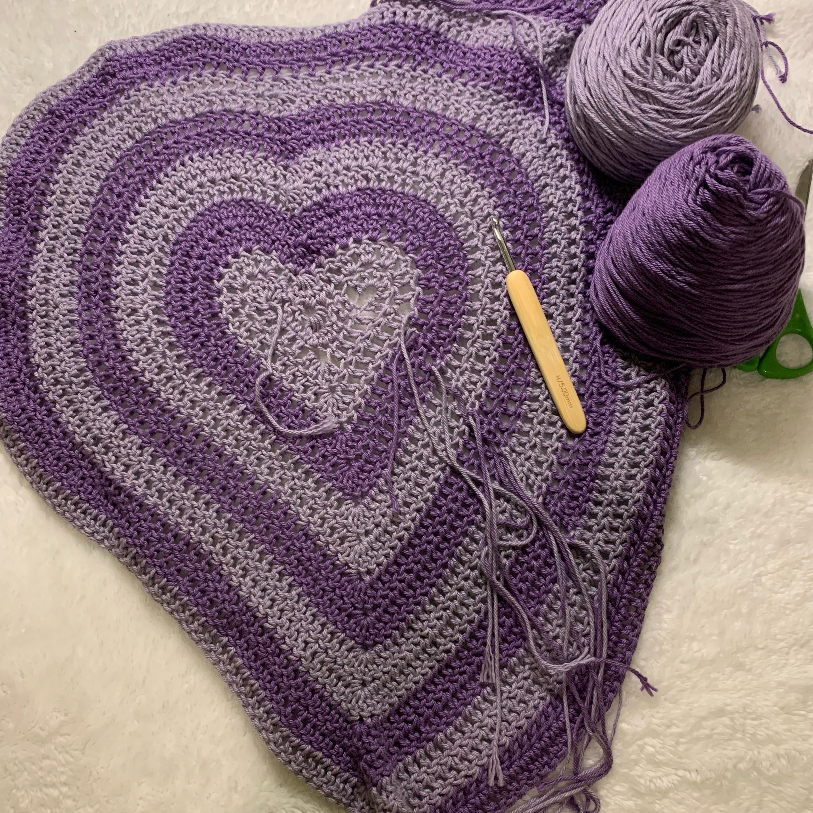
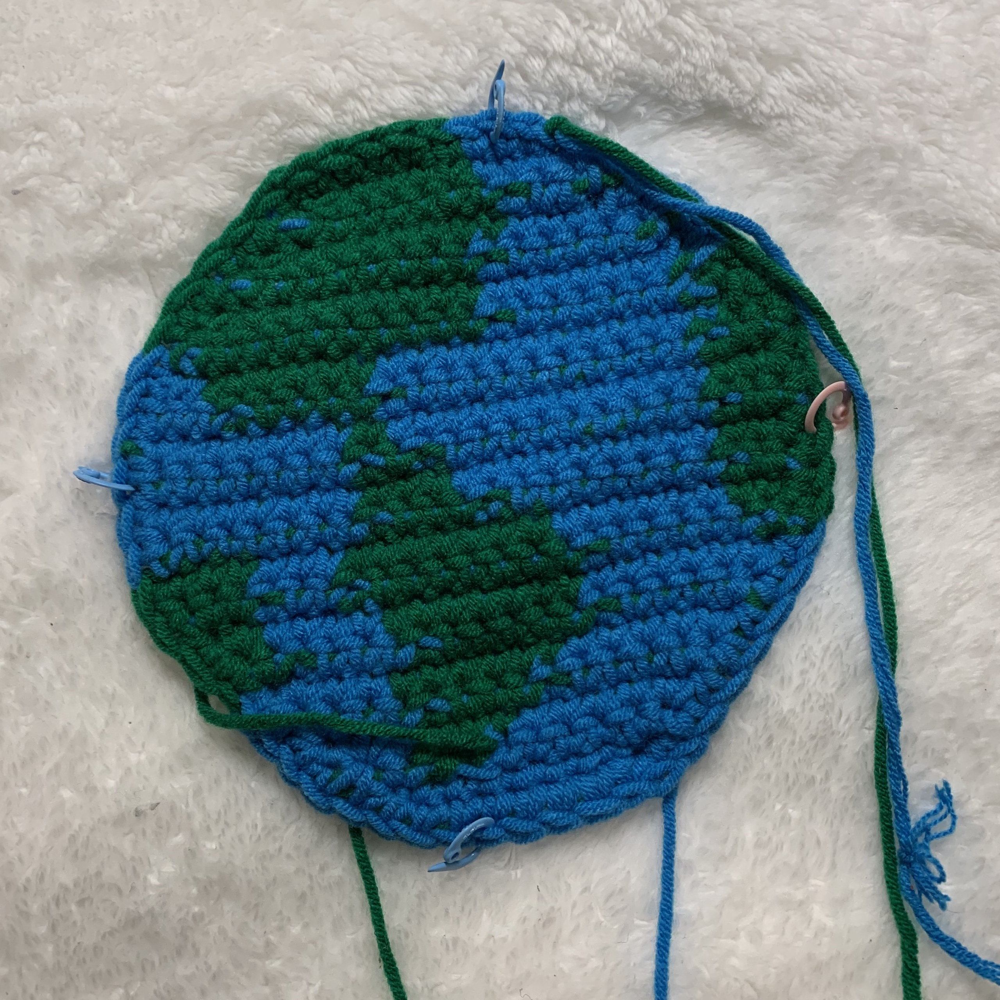

Future Projects
This fall, I have been working on a purple heart sweater using a pattern from OlivaMadeShop. Due to a busier schedule, I have had less time to crochet compared to my previous semesters. However, I have still been making steady progress on the sweater. I hope to finish this sweater by the end of the semester.


I am interested in starting to incorporate my environmentalism into my crocheting hobby through creating earth-inspired crochet items. I am looking forward to pursuing this vision with used fibers from local second-hand stores.